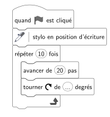
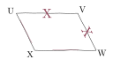
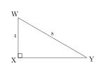
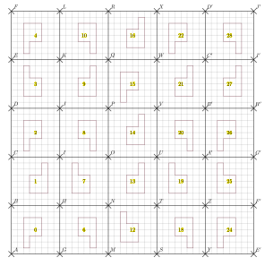

Traduire le calcul par une phrase en français. $6 \times 5-90 \div 9$
$6 \times 5-90 \div 9$ s'écrit : la différence entre le produit de 6 par 5 et le quotient de 90 par 9.
03
Question
Un angle rentrant mesure entre $\ldots\ldots\ldots^\circ$ et $\ldots\ldots\ldots^\circ$.
Un angle rentrant mesure entre ${\color{#EB7F73}\boldsymbol{180}}^\circ$ et ${\color{#EB7F73}\boldsymbol{360}}^\circ$.
04
Question
$DVKZ$ est un parallélogramme tel que ses diagonales $[DK]$ et $[VZ]$ sont perpendiculaires. Déterminer la nature de $DVKZ$.
On sait que $[DK]\perp[VZ]$. Si un parallélogramme a des diagonales perpendiculaires, alors c'est un losange. $DVKZ$ est donc un losange.
05
Question
Quel nombre doit-on écrire à la place des pointillés pour tracer un décagone régulier ?
```
répéter 10 fois
avancer de 20 pas
tourner ↻ de ... degrés
fin
```

Un décagone régulier a des angles de $144^\circ$. Le lutin doit tourner de $180-144={\color{#EB7F73}\boldsymbol{36}}^\circ$ après avoir tracé un côté. Mentalement on divise $360$ par $10$ : $\dfrac{360}{10}=36$.
01
Question
Développer et réduire l'expression suivante. $A=-2(5x-7)(-9x-4)$
Traduire le calcul par une phrase en français. $(130-80) \div (3+7)$
$(130-80) \div (3+7)$ s'écrit : le quotient de la différence entre 130 et 80 par la somme de 3 et 7.
03
Question
$RLV$ est un triangle quelconque. L'angle $\widehat{RLV}$ mesure $37^\circ$ et l'angle $\widehat{LRV}$ mesure $34^\circ$. Quelle est la mesure de l'angle $\widehat{LVR}$ ?
Dans un triangle, la somme des angles est égale à $180^\circ$. D'où : $\widehat{RLV} + \widehat{LVR} + \widehat{LRV}=180^\circ$. D'où : $\widehat{LVR}=180- \left(\widehat{RLV} + \widehat{LRV}\right)$. D'où : $\widehat{LVR}= 180^\circ-\left(37^\circ+34^\circ\right)=180^\circ-71^\circ={\color{#EB7F73}\boldsymbol{109^\circ}}$.
Pour la figure suivante, tracée à main levée, préciser s'il s'agit d'un parallélogramme.

Les côtés consécutifs de $UVWX$ sont de même longueur deux par deux, ${\color{#EB7F73}\boldsymbol{UVWX}}$ n'est donc pas forcément un parallélogramme comme le montre le contre-exemple suivant (il s'agit d'un cerf-volant).
01
Question
Développer et réduire l'expression suivante. $A=-3(-11x-10)-(-7-7x)$
Quel est l'inverse de $0{,}8$ ? (Une fraction est attendue)
Comme $0{,}8=\dfrac{8}{10}=\dfrac{4}{5}$, l'inverse de $0{,}8$ est ${\color{#EB7F73}\boldsymbol{\dfrac{5}{4}}}$ car $\dfrac{4}{5} \times \dfrac{5}{4} = 1$.
03
Question
$1~\text{m}^2$ est égal à $\ldots\ldots\ldots\ldots\ldots\ldots\ldots\ldots\ldots$ de $1~\text{dm}^2$.
$1~\text{m}^2$ est égal à une centaine de $1~\text{dm}^2$.
04
Question
Déterminer la valeur exacte de $XY$.

On utilise le théorème de Pythagore dans le triangle $WXY$, rectangle en $X$. $WX^2+XY^2=WY^2$ $XY^2=WY^2-WX^2=8^2-4^2=64-16=48$ $XY={\color{#EB7F73}\boldsymbol{\sqrt{48}}}={\color{#EB7F73}\boldsymbol{4\sqrt{3}}}$ Mentalement : La longueur $XY$ est donnée par la racine carrée de la différence des carrés de $8$ et de $4$. Cette différence vaut $64-16=48$. La valeur cherchée est donc : $\sqrt{48}=4\sqrt{3}$.
05
Question
a. Quelle transformation permet de passer de la figure 20 à la figure 26 ? b. Quelle transformation permet de passer de la figure 1 à la figure 2 ? c. Quelle transformation permet de passer de la figure 7 à la figure 13 ?

a. La figure $20$ a pour image la figure ${\color{#EB7F73}\boldsymbol{26}}$ par la symétrie d'axe $(A'B')$. b. La figure $1$ a pour image la figure ${\color{#EB7F73}\boldsymbol{2}}$ par la symétrie dont le centre est le milieu de $[CI]$. c. La figure $7$ a pour image la figure ${\color{#EB7F73}\boldsymbol{13}}$ par la symétrie d'axe $(NO)$.